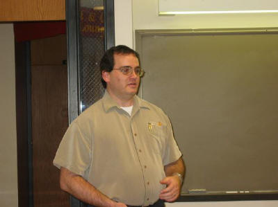

|
 |
 |
|
 |
 |
03/19/2004
Glenn Frasca, Helpdesk manager, Anheuser Busch, presented interesting
information about The Wintel Platform. He presented some of the proprietary
software applications and support at Anheuser Busch.

Glenn Frasca talked about the building block architecture of desktop and
server PC platforms and facilitate a better understand of how standard
terminology fits into the architecture as well as what factors need to be
considered when writing software for the PC platform to make best use of the
technology.
|
 |
 |